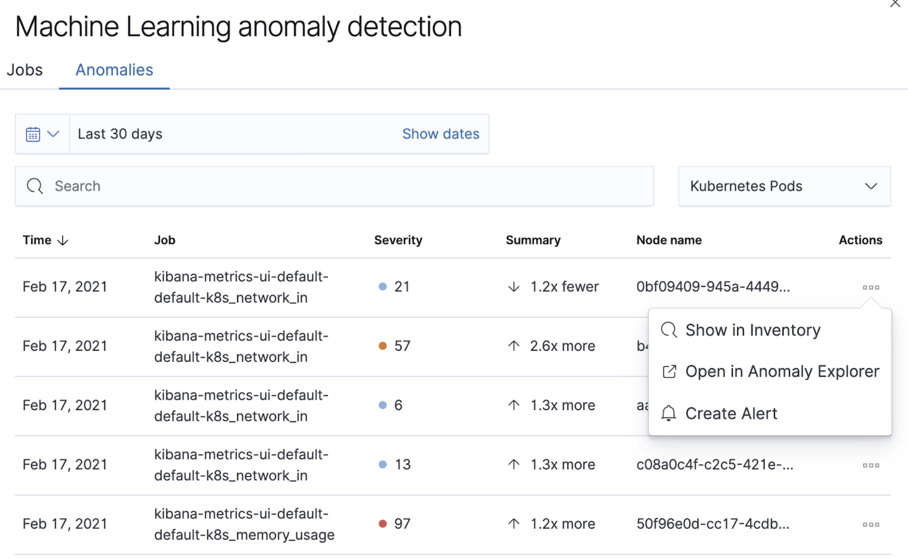

What’s new in 7.13edit
Here are the highlights of what’s new and improved in 7.13.
Other versions: 7.12 | 7.11 | 7.10 | 7.9 | 7.8 | 7.7 | 7.6 | 7.5 | 7.4
Give 7.13 a tryedit
Try 7.13 now by deploying Elasticsearch and Kibana on Elastic Cloud or by downloading them.
Onboard logs and metrics for Azure services in a few clicks with expanded Microsoft integration (technical preview)edit
We’ve enhanced support for Azure monitoring use cases with our new expanded native Microsoft integration, letting users easily onboard logs and metrics for their Azure services to Elastic Observability in a few clicks. This includes subscription level data like activity logs, and all non-compute services, like Azure SQL Database and Azure Data Factory.
Tag-based filters allow you to easily configure your setup to limit data collection to only specific resources. Logs and metrics are automatically written in the Elastic Common Schema (ECS) format, making it easy to correlate data from your Azure infrastructure and data from non-Azure sources.
Finally, we’re introducing the Elastic VM extension for Azure VMs and VM scale sets, allowing you to instrument your compute environment with Elastic Agent in seconds. All installed extensions are automatically enrolled in Fleet, giving you the ability to manage a fleet of active Elastic VM extensions from Kibana.

Fleet Server provides better scalability and security (beta)edit
Centrally manage a fleet of hundreds of thousands of Elastic Agents with Fleet Server, which releases in 7.13 in beta. Elastic Agents are installed on servers, corporate laptops, IOT, and more. Fleet Server provides visibility into the status of Elastic Agents, makes policy updates, and executes fast response actions to security incidents. It’s a new infrastructure component of the Elastic Stack. Previously, an API in Kibana provided central management in Fleet. We separated this component into an independent server to make it more scalable and secure.
Scalability is critical because we have users with hundreds of thousands of agents. You can now enroll several times more agents into each node of Fleet Server than you could previously with Kibana. It’s designed to have a low resource footprint both for CPU and memory, and it can be scaled horizontally to handle the loads driven by our largest users.
Speed is especially critical when it comes to executing response actions for security incidents. Elastic Agents maintain long polling connections to Fleet Server. When an update or response action is applied, Fleet Server can update the agents in seconds by responding to those requests. This provides a faster response time than you’d get with the default settings in Puppet, for example, which has a 30-minute run interval.
Fleet Server also allows us to enable deployment scenarios with stronger security, particularly in segmented networks. It’s a common practice to use private networks with firewalls to reduce the surface area for attacks. Elastic Agents running on endpoints no longer need direct access to Kibana. They can now be restricted to Fleet Server, allowing for tighter controls in the network layer.
Learn more in our Fleet Server documentation.
APM & Fleet on Elastic Cloudedit
We’ve expanded the capabilities of APM on Elastic Cloud by adding Fleet. Fleet provides the ability to manage many thousands of Elastic Agents centrally. It makes it easier to get started with the Elastic Stack because you can add integrations to Elastic Agents with just a few clicks, allowing you to ingest data from popular services and protect hosts from security threats. The Fleet capabilities are currently a beta release.
In new deployments, APM & Fleet is turned on by default so that you can get started quickly. You also get an instance for free with 512MB of memory. This is sufficient for hundreds of events per second in APM and enrolling dozens of Elastic Agents into Fleet.

When you need more than the default 512MB of memory due to increasing usage, it’s easy to add more capacity. In the Cloud Console, just add more memory by adjusting the instance size on the edit deployment page.
If you have an existing deployment without APM enabled, we encourage you to enable it. This will make it easier to try the APM & Fleet apps. Also, it’s free, so there is little reason not to. Just add capacity on the edit deployment page.
If you are a heavy user of your APM instance on Elastic Cloud, you should know that Fleet requires additional memory. Before upgrading to 7.13, we encourage you to check your memory usage in the Stack Monitoring app. If you have less than 200MB left, we recommend increasing the size of your instance before upgrading to avoid a degradation in performance. Then, evaluate the best size after completing the upgrade process.
Learn more in our APM & Fleet documentation.
Collect logs from AWS Fargateedit
In this release, we’re expanding the AWS Fargate integration with logs collection.
Now you can use the AWS Fargate module in Filebeat to
collect container logs from Amazon ECS on Fargate.
The module uses the Filebeat awscloudwatch
input to get log files from one or more log streams in AWS CloudWatch.
Logs from all containers in Fargate launch type tasks that can be sent to CloudWatch by adding the awslogs
log driver under logConfiguration section in the task definition.
APM Agents: Improved auto-instrumentation and better support of cloud native servicesedit
In 7.13, we’ve added support for more cloud services and frameworks when it comes to APM agent auto-instrumentation:
- Go, Ruby, and Python agents added support for AWS DynamoDB, S3, SNS, and SQS.
- .NET agent added support for Azure Storage, Queue, and ServiceBus.
- .NET, Go, and Ruby agents improved support for Azure App Services and now collect additional metadata.
Additional APM agent-specific improvements in 7.13 include:
- Java: Cassandra instrumentation.
- .NET: MongoDb instrumentation.
- Node.js: performance improvements.
- PHP: support for PHP 8, central config support.
Native support for OpenTelemetry (GA)edit
We are pleased to announce that in 7.13, our native support for OpenTelemetry to Elastic Observability is now GA.
OpenTelemetry is emerging as the standardized collection layer for observability data and is designed to enable organizations to instrument their apps in an open and vendor-neutral manner. Native support for OpenTelemetry protocol (aka OTLP) enables organizations to directly send data collected by OpenTelemetry agents to their Elastic deployments. Not only does this lower the effort for users to adopt OpenTelemetry into their existing Elastic architecture, but it also simplifies the architecture.
Our support for OpenTelemetry is not new. In July 2020, we released the OpenTelemetry Collector exporter for Elastic, which acted as a translation layer between OpenTelemetry agents and Elastic APM. With the GA of OpenTelemetry protocol support in 7.13, we remove the need to install and manage this extra component. Users can now directly send data from their OpenTelemetry agent to the Elastic APM server. Using the OpenTelemetry Collector with the OTLP exporter is also supported, bringing all the benefits provided by a collector deployed on the edge.

Synthetics Real Browser Agent (beta)edit
With the 7.13 release, we’re thrilled to announce that our Real Browser based synthetic monitoring agent has reached beta status. This exciting milestone brings us closer to General Availability. If you haven’t given synthetics a try yet, or if you used an earlier technical preview build, download the latest beta agent and see what the future of synthetic monitoring looks like. Over the coming releases (before GA), we will be focussing on improving the overall user experience, including a new hosted testing node service (so you won’t have to manage the testing nodes yourself), and a point and click script recorder—tightly integrated with our Fleet product—that will enable GUI based synthetic monitor management. There’s a lot going on here, and we’d love to have you be a part of this exciting new addition to the Elastic Observability suite.
Time comparisons and enhanced APM service instance viewsedit
An improved APM Service Overview page introduced in version 7.12 streamlined troubleshooting workflows by presenting all relevant information about service performance in a single comprehensive view. The goal — faster root cause analysis and lower MTTR. We are excited to introduce several new enhancements to the Service Overview page to further this goal.
- Time comparison view allows users to quickly do a side-by-side comparison of the current and historical behavior. For instance, they could overlay today’s performance with yesterday’s performance; or this week’s performance to the week prior. Such time comparisons are a common stop in an investigative workflow, and users can quickly spot deviations from past behavior.
- Scatterplot view visually shows service instances by latency and load distribution, and can reveal which instances are behaving differently under load.
- Enhanced instance panel now lists richer metadata, such as service name, version, container, and cloud metadata, directly in the table, so you can quickly identify what instance attribute might be contributing to a service issue without leaving the service overview page. Users will also benefit from the ability to quickly examine container/pod/host metrics and logs for each of your service instances.

A new curated way of exploring User Experience and Synthetic data (technical preview)edit
Have you ever had a question that you wanted to use your raw data to answer? Whether you’re trying to validate a hypothesis or simply looking for "interesting" insights in your data, having a rich tool that enables this type of data visualization and manipulation is a critical part of any analytics solution. Kibana currently has our Lens product which is an incredibly powerful tool, but given that it sits on top of the Elastic Stack, it needs to be able to cater to all kinds of different data and requires the users to be familiar with things like index patterns and field names. This creates a barrier for users who aren’t familiar with these concepts, and limits the power of Lens. We wanted to build a more focussed experience for Observability users that was based on the power of Lens but was abstracted away from the complexity that comes with a one-size-fits-all solution.
We’re incredibly excited to launch the technical preview of the new Observability Exploratory View in 7.13. With this release, we are focussing on User Experience (RUM) and Uptime (Synthetics) data. Users will be able to chart time series and distributions of key measurements and then filter and break down the data in a completely familiar way. As we evolve this new feature, expect to see more data types coming in, the ability to compare different user cohorts across multiple series, and comparisons across different periods of time. Any chart created in the Exploratory view can be opened in Lens for further editing or even embedded across Kibana anywhere existing visualizations can be embedded today.

To access the Exploratory View, open Uptime or User Experience and click on the "Analyze data" link in the upper right-hand corner of the screen.
See Exploratory data visualizations for more information.
Improved infrastructure monitoring widget on Observability Overviewedit
We updated the density of information about monitored infrastructure on the Observability Overview page, improving the ability to quickly find causes of problems and troubleshooting the root cause. The new Metrics widget now shows top hosts in your infrastructure with the largest resource footprint.

Supporting runtime fields stored in Kibana index patterns in Logs UIedit
Kibana applications such as Kibana index pattern editor, Lens, and Discover, allow the creation of runtime fields. The Logs UI now extends support for choosing Kibana patterns and displaying and querying runtime fields in Logs UI.
You can use Kibana index patterns to power the Logs UI, instead of choosing Elasticsearch index name patterns. This simplifies setup and administrative overhead and enables the visualization and querying of runtime fields stored in Kibana index patterns.

You can use the runtime fields stored in Kibana index patterns in the Logs UI, just like any other field.

Improved troubleshooting of infrastructure anomaliesedit
To help infrastructure ops teams monitor their massive deployments and spot any failing resources, we introduced anomaly detection for infrastructure resources (for example, hosts, VMs, and Kubernetes clusters). In 7.13, we’re adding quick views for examining the results from anomaly detection jobs in Kibana’s Metrics app.
-
The Anomalies tab in the Anomaly Detection flyout lets you see key details such as the time, anomaly score/severity, the increase between the actual value and the expected value, and the name of the failing resource. The available actions also let you see the impacted inventory resources, troubleshoot an anomaly in Anomaly Explorer, or create an alert.
 -
A similar view has also been added to the Enhanced Host Details panel that lets you see all anomalies detected for any given host over a set period of time. This allows you to quickly see if a host is experiencing recurring issues and needs further investigation.

By default, the Anomaly views show all anomalies with a severity score of 50 or higher in the selected section of the timeline. If you are only interested in critical anomalies, for example, you can change the severity threshold in the Metrics app’s settings.